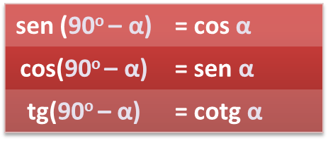
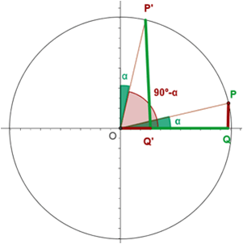
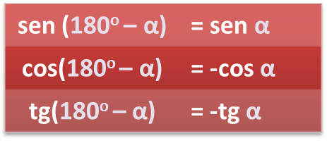
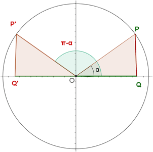
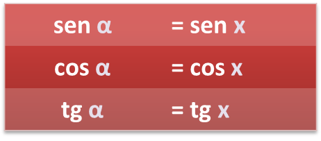
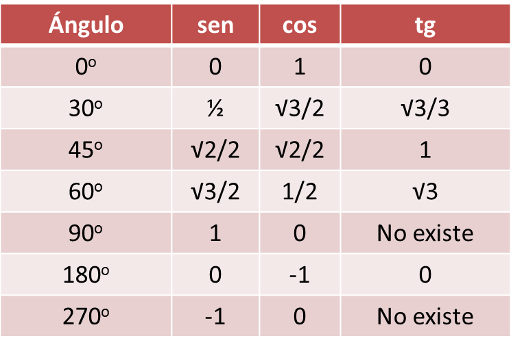

Relación entre las razones de algunos ángulos
- Ángulos complemetarios, α y 90o – α:
|  |  |
- Ángulos suplementarios, α y 180o - α:
|  |  |
- Ángulos opuestos, α y – α:
 |
 |
- Ángulos cuya diferencia es 180o, α y 180o + α:
 |
 |
- Ángulos mayores de 360o. Si x es el resto cuanbdo lo dividimos por by 360o , entonces

Ejemplo: si sabemos que sen 65o = 0,9, calcula cos 25o , sen 295o, sen 425o , sen 115o y sen 245o .
· cos 25o = sen 65o = 0,9
· sen 295o = sen (- 65o )= - sen 65o = - 0,9
· sen 425o = sen 65o = 0,9
· sen 115o = sen (180o - 65o )= sen 65o = 0,9
· sen 245o = sen (180o + 65o )= -sen 65o = -0,9
NOTA. Memoriza esta tabla:

Ejercicio. Calcula (sin calculadora):
a) sen 150o
b) cos 225o
c) cosec(7π/6)
d) tg (-495o)
Soluciones: a) 1/2; b) -√2/2; c) -2; d) 1
Obra publicada con Licencia Creative Commons Reconocimiento No comercial Compartir igual 3.0